|
|
|

Role Owner Approvals
In TIM 5.0, the Role Owner can now be the participant of an Approval activity. Out of the box there are two new workflow extensions with regards to handling role changes for a given person.
Role Owner Approval Workflow Extensions
- approveRolesByOwner(Person person)
- Person person
- Cannot be null. Will cause activity to fail because of invalid data.
This workflow extension takes a person as an input parameter. If the person has new roles found (determined by the javascript: person.getNewRoles()), approvals will be generated for those roles and sent to the role owners. The approval process cannot be customized and so the participant is always the Role Owner. The roles cannot be customized and will always be the new roles on the person.
- approveRolesWithOperation(Person person, List rolelist, String approvalOperationName)
- Person person
- Cannot be null. Will cause activity to fail because of invalid data.
- List rolelist
- Can be null. If null, roles to approve will be pulled off the person via the javascript: person.getNewRoles(). A new list of roles can be manually set to the rolelist by writing the appropriate script within a script node prior to the Role Owner Approval Workflow Extension node. For instance, the following script could be used to set a new role to the rolelist:
<script> var roles = (new RoleSearch()).searchByName("roleName"); if (roles.length > 0) { rolelist.set(roles); } </script>
Here, roleName is the name of an existing role.
- String approvalOperationName
- Can be null. If null, the default simple approval operation (which has the role owner as the participant) will be used.
This workflow extension takes a person, role list, and approval operation name as input parameters. The person's new roles will start the specified approval operation name for each role. If a role list passed to the extension and is not null while having roles in it, approvals will only be generated for those roles in the list rather than using person.getNewRoles().
- Note: When one or more role approval requests are rejected by the role owner, then the respective roles shall not be added to the person, but the person operation will be continued in the usual manner.
Role Owner approval during a Person Create or Modify
- Simple role owner approval for all new roles
- Customized role owner approval process for all new roles
- Additional customizations that could be made to skip the approval process, when the new roles have no owner defined.
Simple Role Owner approval for all new roles for a Person
This example covers the following use case: Given a person's new roles (added during person add or person modify), role owner approvals need to be generated for each of those new roles provided those new roles have owners defined. If the owner is not defined for the newly added role, then the participant resolution fails and the approval request goes to System Administrators. After executing the below steps, kindly follow the steps mentioned under the third heading listed above, if you need to skip the approval process by the System Administrators, in the absence of a role owner.
The role owner approval process in this case is very simple. The process has one approval activity where the participant is the role owner and role.
Changes are required to the person add and person modify operations (Configure System > Manage Operations) highlighted below.
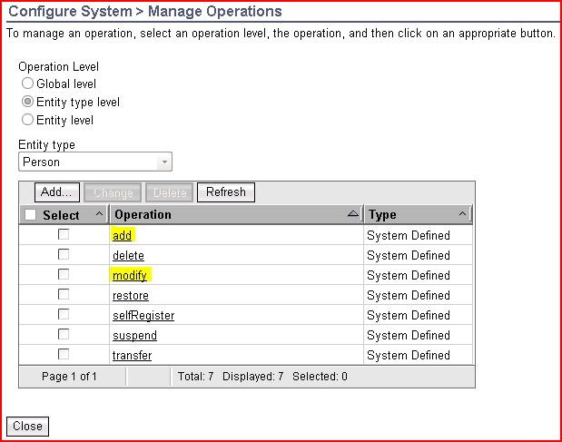
Both the person add and person modify operations will require the same extension activity dragged in before the CREATEPERSON activity or MODIFYPERSON activity.
First modify the person add operation by opening the operation in the workflow designer. Drag in a new EXTENSION activity. Connect transitions between the START, EXTENSION, and CREATEPERSON activities as show below. The extension to select is approveRolesByOwner(Person person). Finally map the person relevant data item to the person input parameter and person output parameter. The final activity will look like the one show below. Save the operation by clicking OK.
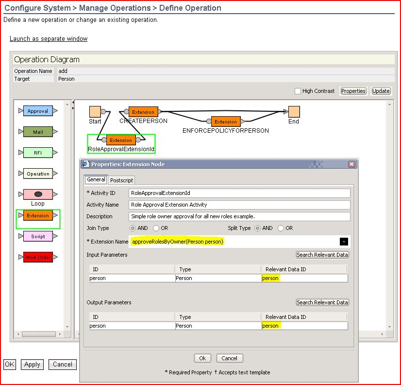
Now select the person modify operation to apply the same changes as done for the person add operation. The final activity will look like the one show below. Save the operation by clicking OK.
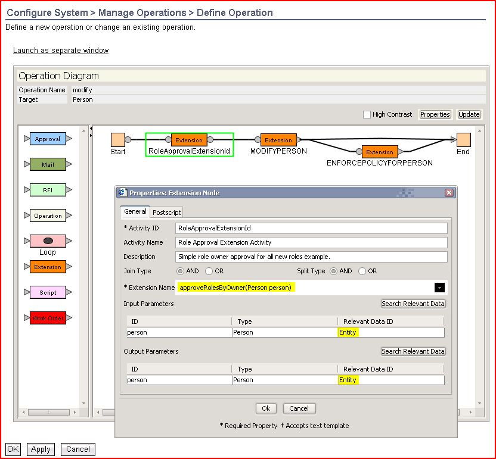
All changes are now complete. During any person add or modify, approval(s) will be generated for any new role(s) added to the given person. Approvals will be generated for each role of the new roles provided the role has an owner defined.
The status of the role owner approval in this example as it is so far will not be rolled up to the top level of the audit trail. If you need to do that you will need to add these lines to the post script for the role approval activity:
WorkflowRuntimeContext.setProcessResult(WorkflowRuntimeContext.getActivityResult()); WorkflowRuntimeContext.setProcessResultDetail(WorkflowRuntimeContext.getActivityResultDetail());
and remove or modify the post script code on the activities following the role approval extension.
Note: To generate the approval request, ensure that you add the extension node, approveRolesByOwner, before the CREATEPERSON or the MODIFYPERSON activity. Adding the extension node after the CREATEPERSON or the MODIFYPERSON activity does not generate the approval request.
Customized role owner approval process for all new roles
This example builds upon the first example above but the use case is slightly modified.
Use case: Given a person's new roles (added during person add or person modify), role owner approvals need to be generated for each of those new roles provided those new roles have owners defined. However, the role owner approval process needs to be customized rather than using the simple approval process defined out of the box. If the owner is not defined for the newly added role, then the participant resolution fails and the approval request goes to System Administrators. After executing the below steps, kindly follow the steps mentioned under the third heading listed above, if you need to skip the approval process by the System Administrators, in the absence of a role owner.
Changes are required to the person add and person modify operations (Configure System > Manage Operations) highlighted below.
Both the person add and person modify operations will require the same extension activity dragged in before the CREATEPERSON activity or MODIFYPERSON activity.
First modify the person add operation by opening the operation in the workflow designer. Drag in a new EXTENSION activity. Connect transitions between the START, EXTENSION, and CREATEPERSON activities as show below. The extension to select is approveRolesWithOperation(Person person, List rolelist, String approvalOperationName). Finally map the person relevant data item to the person input parameter and person output parameter.

Click on Search Relevant Data.
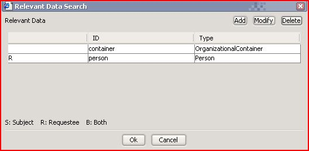
Add a rolelist relevant data item.
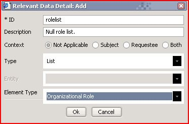
Add a customApprovalOperationName relevant data item with a default value of My Custom Role Approval. This name could be any global operation name that has been setup for being a custom role approval operation (shown later in this example).
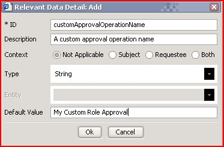
Final relevant data item list after adding rolelist and customApprovalOperationName.
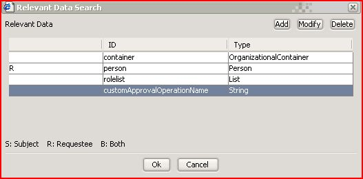
The final extension activity after mapping all relevant data items. Click OK to save the activity and click OK to save the person add operation.
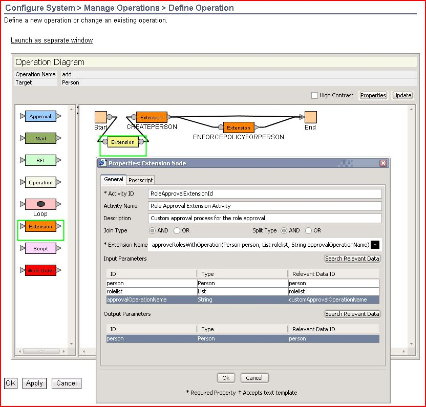
Modify the person modify operation by opening the operation in the workflow designer. Changes here will be very similar to what was done for the person add operation.
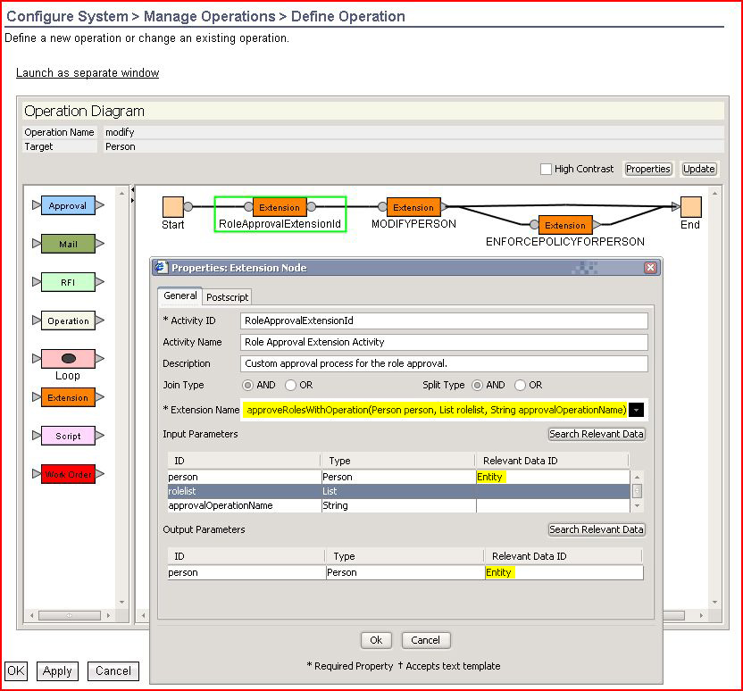
Click on Search Relevant Data.
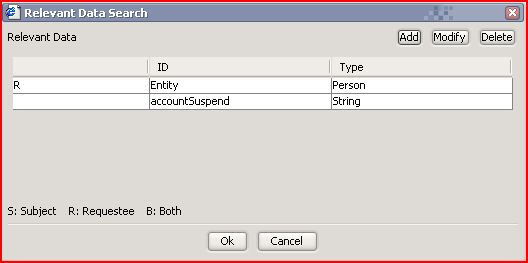
Add a rolelist relevant data item.
Add a customApprovalOperationName relevant data item with a default value of My Custom Role Approval. This name could be any global operation name that has been setup for being a custom role approval operation (shown later in this example).
The final extension activity after mapping all relevant data items. Click OK to save the activity and click OK to save the person modify operation.
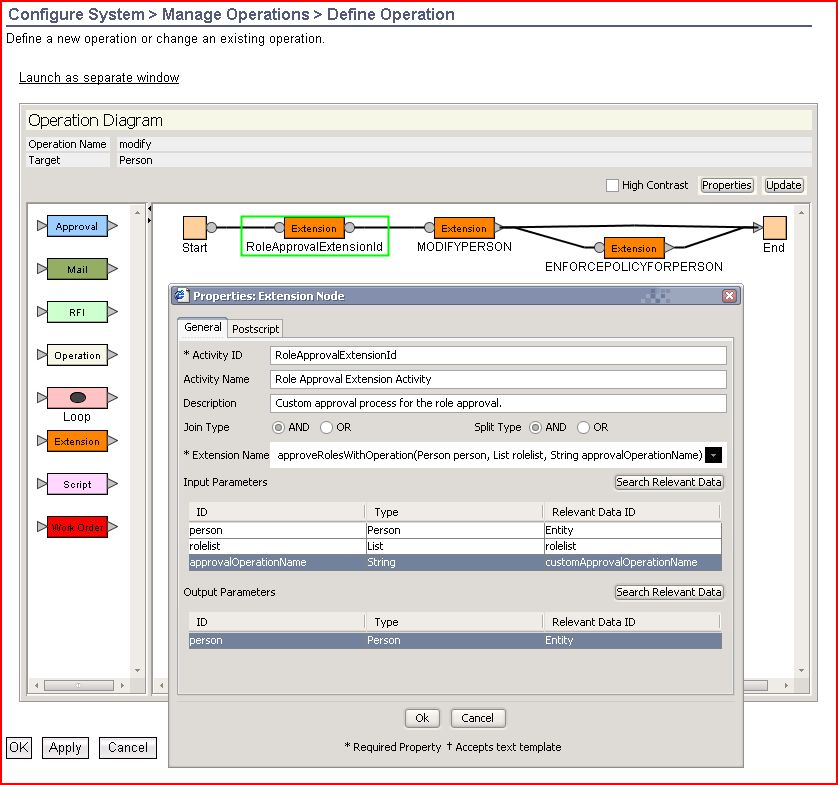
Note: To generate the approval request, ensure that you add the extension node, approveRolesWithOperation, before the CREATEPERSON or the MODIFYPERSON activity. Adding the extension node after the CREATEPERSON or the MODIFYPERSON activity does not generate the approval request.
Click on the Global operation level and click on Add....
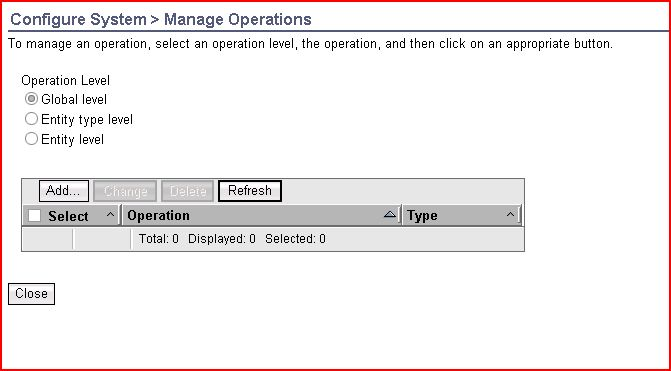
Specify the Operation Name to be My Custom Role Approval (the name we specified earlier in the person add/modify customApprovalOperationName's default value).
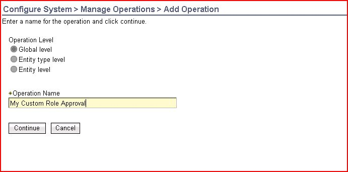
After the workflow designer opens, click on the Properties button in the upper right.
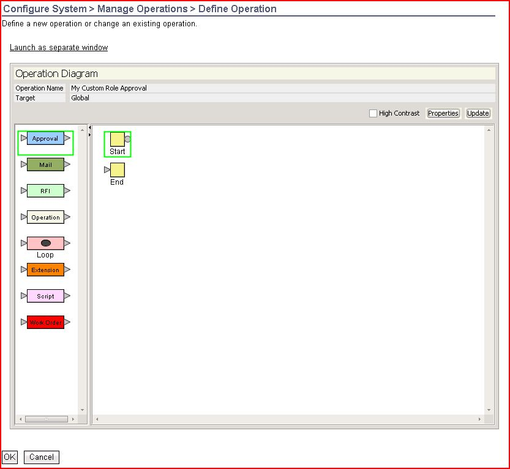
Two input parameters are required in order to use this global operation as the custom approval operation name. These input parameters are personIn and roleIn and will need to be added in the same order as shown below. This is because this global operation gets executed via "approveRolesByOperation" extension used in Person add/modify operation earlier. The input parameters to this "approveRolesByOperation" extension are defined in the following order:
Input Parameters: person of type Person rolelist of type List approvalOperationname of type String
Since input values for parameters(person,rolelist) specified above are mapped with input parameters(personIn, roleIn) defined here, these input parameters should be added in [personIn,roleIn] order as shown below. Any change in this order will lead to incorrect mapping of person relevant data to role object and vice-versa and will not produce the expected results.
personIn has the type of Person.
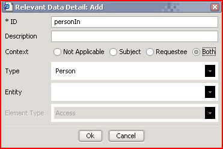
roleIn has the type of Organizational Role
.
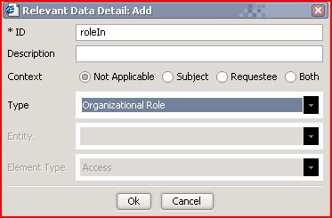
Final input parameter list
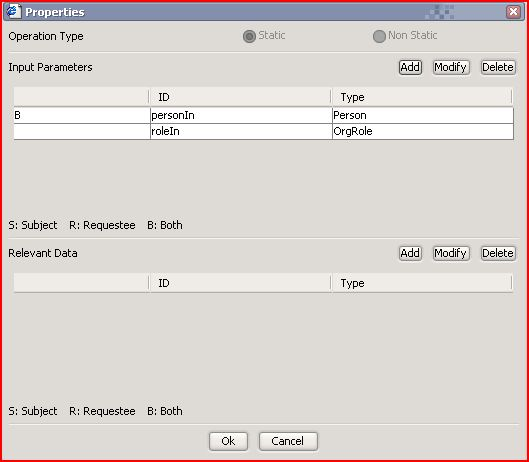
Drag in a new APPROVAL activity put it between START and END while connecting transitions as shown.
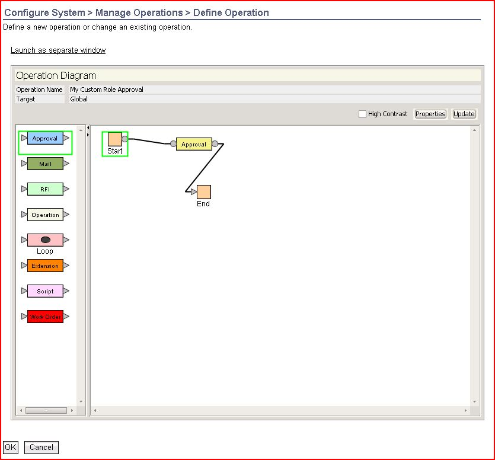
Open the approval activity and specify the Participant as Role Owner. Map the input parameters roleIn and personIn.
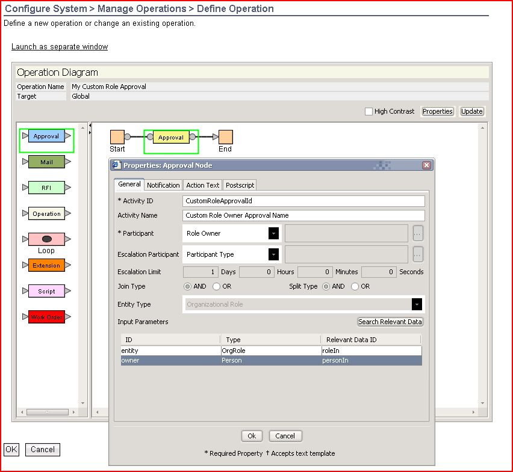
On the Notification tab, add the following to the text and XHTML bodies:
This is a role owner approval for role: <JS>roleIn.get().name;</JS>
The notification can be customized further but for this example this is the only modification made.
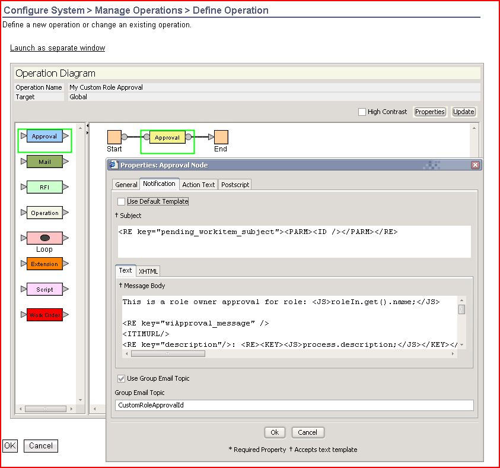
On the Action Text tab, uncheck Use Notification Text as Action Text and specify the following as the action text:
This is a role owner approval for role: <JS>roleIn.get().name;</JS>
The action text can be customized further but for this example this is the only modification made.
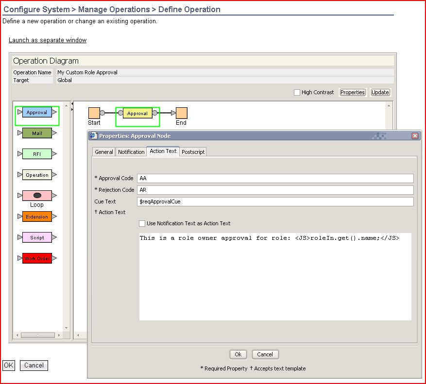
On the Postscript tab, add the following javascript which will bubble up the result of the approval activity which is required. This result is used to remove or leave the given role on the person object before the person is stored in the data store.
process.setResult(activity.resultSummary, activity.resultDetail);
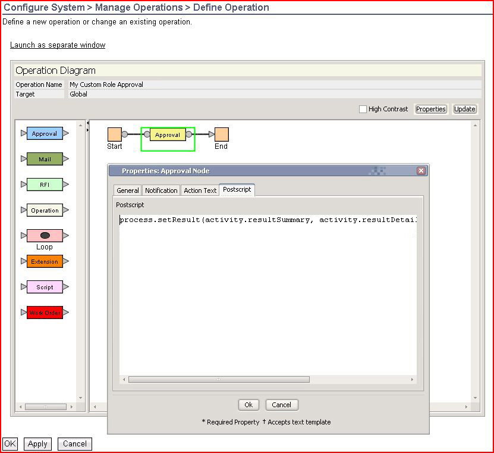
Click OK to save the approval activity and click OK to save the new global operation named My Custom Role Approval.
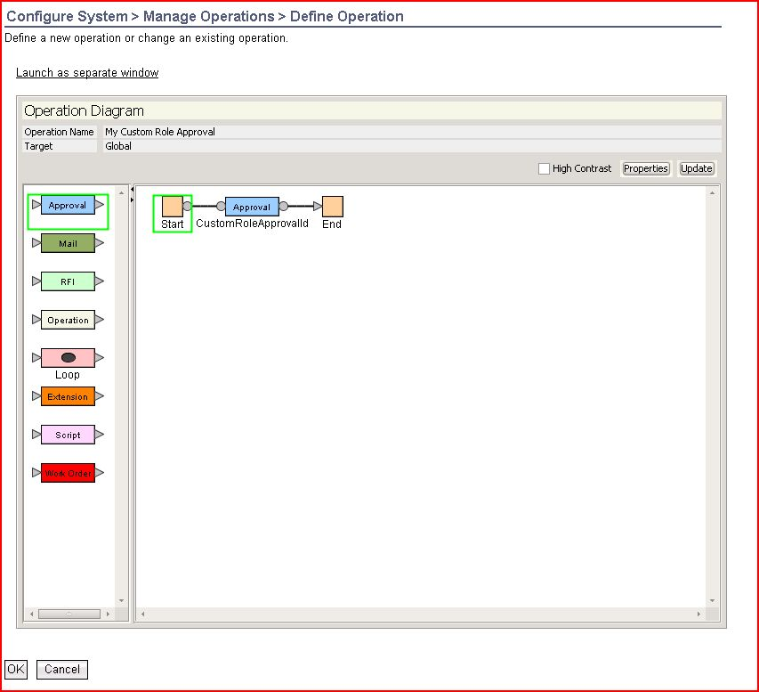
All changes are now complete. During any person add or modify, approval(s) will be generated for any new role(s) added to the given person using the My Custom Role Approval global operation. Approvals will be generated for each role of the new roles provided the role has an owner defined.
Additional customizations that could be made to skip the approval process, when the new roles have no owner defined.
As mentioned before, in case the owner is not defined for the newly added role, then the participant resolution fails and the request goes to System Administrators.Please follow the steps mentioned below to skip this approval process, if none of the newly added roles have an owner.
Note that these steps are additional customizations that are to be implemented only after completing the steps mentioned above (Either 1 or 2).
Both the person add and person modify operations will require the same SCRIPT node to be dragged in before the CREATEPERSON activity or MODIFYPERSON activity.
First modify the person add operation by opening the operation in the workflow designer. Drag in a new SCRIPT node.Connect transitions between the START, SCRIPT, EXTENSION and CREATEPERSON activities as shown below.

Click on properties (encircled in red below). Add a relevant data item roleOwnerExists.
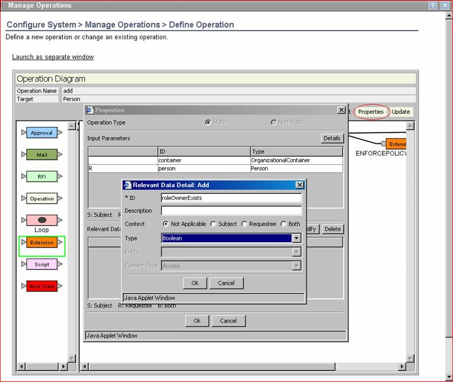
Add the following script to the script node:
<script> roleOwnerExists.set("false"); var per = person.get(); var rolesArray = per.getNewRoles(); for( var i=0; i<rolesArray.length;i++) { var owners = rolesArray[i].getProperty("owner"); if(owners.length!=0){ roleOwnerExists.set("true"); break; } } </script>
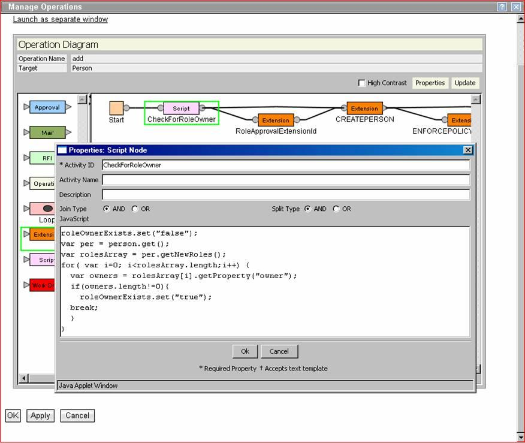
Add the following condition to the transition line connecting CheckForRoleOwner (SCRIPT node) and CREATE PERSON :
roleOwnerExists.get()=="false";
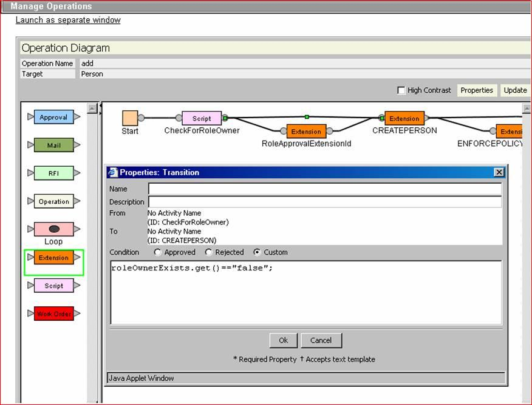
Now add the following condition to the transition line connecting CheckForRoleOwner (SCRIPT node) and RoleApprovalExtensionId (EXTENSION) :
roleOwnerExists.get()=="true";
Save the operation by clicking OK.
Perform similar changes to Person modify workflow as well .In the CheckForRoleOwner SCRIPT node, replace the line
var per = person.get(); with the following line: var per = Entity.get();
Save the changes.
For the Person modify workflow, the final activity will appear as follows:
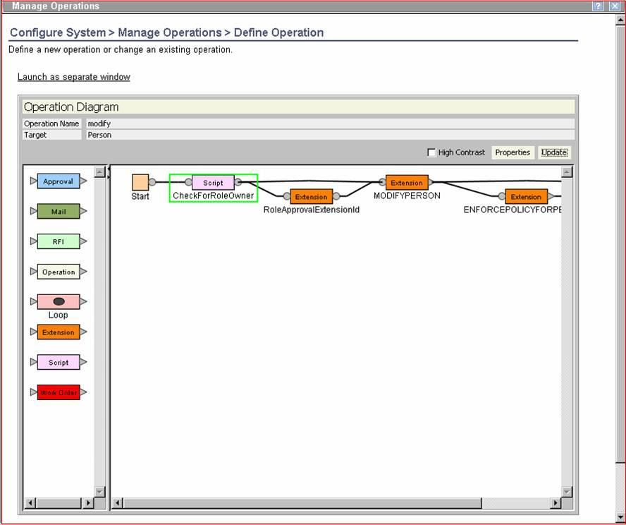
If you are customizing the workflow designed for 'Customized role owner approval process for all new roles', you may need to replace the line :
var rolesArray = per.getNewRoles(); with var rolesArray = rolelist.get ();
, only when you explicitly set the rolelist with some pre-defined role.
All the required changes have been done now.
After applying these changes, the approval request will be generated only if the newly added role has at least one owner defined for it. Otherwise, the CREATEPERSON / MODIFYPERSON operation will be directly performed and the operation RoleApprovalExtensionId will be skipped.
Note: With the above customization, if more than one role is added to the person, then the approval process shall not be skipped, if at least one role from the list of the newly added roles , has an owner. And in such a scenario, the approval request for the roles without an owner would be sent to the System Administrators.